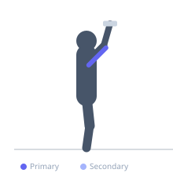
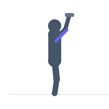

Exercise guide / Tate Press
Tate Press
The Tate press is a dumbbell tricep exercise where the elbows flare outward and the dumbbells are lowered toward the chest with the forearms folding down, then pressed back up. Named after powerlifter Dave Tate, this movement keeps the upper arms stationary with elbows high and wide, creating a unique load angle that targets the medial and lateral tricep heads. The exercise is performed lying on a bench and is used heavily by powerlifters for tricep accessory work.
Primary muscles
triceps lateral head
triceps medial head
Secondary muscles
triceps long head
Equipment
Dumbbell (Fixed)
Flat Bench


Starting position
- Lie on a flat bench. Hold a dumbbell in each hand with the dumbbells touching above the chest, palms facing away (pronated). Elbows pointing out to the sides.
Setup
- Begin with the dumbbells at the top position, touching above the chest. The elbows should be high and pointing outward throughout.
Steps
- Step 1: Begin with dumbbells above the chest, elbows pointing to the sides.
- Step 2: Lower the dumbbells by bending the elbows, letting the forearms fold down toward the chest.
- Step 3: The dumbbells lower toward the chest while the elbows stay high and pointed out.
- Step 4: Extend the elbows to press the dumbbells back to the starting position.
Coaching cues
- Elbows stay high and wide
- Forearms fold down — not the elbows
- Squeeze at the top
Breathing
- Inhale on descent, exhale on press.
Range of motion
- Dumbbells lower to chest level, full extension at the top.
Tempo
- 2-0-2-0
Common mistakes
- Elbows dropping toward the body (this becomes a press rather than a Tate press)
- Rotating the hands during the movement
Safety
- Use moderate weight — the flared elbow position is not suitable for heavy loads
Training
- hypertrophy: 10–15 reps
- hypertrophy: 3–4 sets
- Rest: {'hypertrophy': 75}